Principy a praxe vizualizace dat
Přehled témat
- Proč grafy raději než text
- Obecné principy vizualizace
- Architektura vizualizace (grammar of graphics)
Proč grafy raději než text?
Florence Nightingale a Krymská válka (1850s)

Blue diesease from poor hygiene. Red battle wounds, Black other causes. Nightingale: first female fellow of the Royal Satistical Society, teamed up with a brilliant statistician of poor parents William Farr who lacked Nightingale’s fame and political connections. About lobbying with Queen Victoria: ‘She may look at it because it has pictures.’ 16 000 of the 18 000 deaths were from preventable disease.
John Snow a epidemie cholery v Londýně

{kind=link}
Thanks to Snow’s visualizations, suspicion fell on watr sources rather than ‘bad air’ which was the main suspect of causing cholera until then.
Spočítejte všechny trojky

Zdroj Ware (2012)
Spočítejte všechny trojky
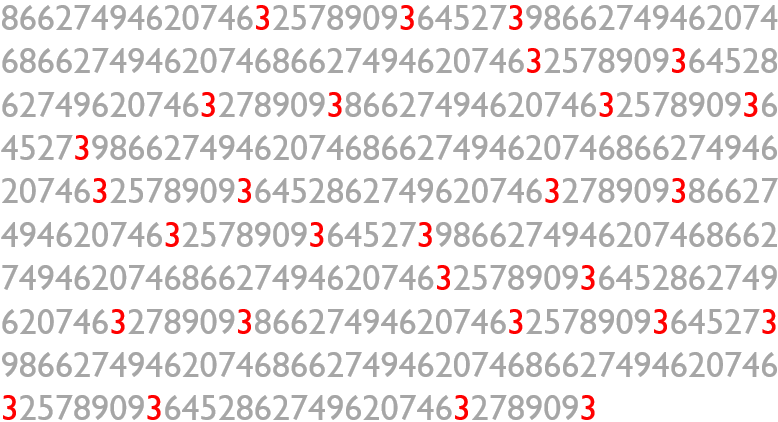
Zdroj Ware (2012)
Lépe si pamatujeme vizuálně

Zdroj Medina (2014)
Zrak je náš hlavní smysl, svět vidíme skrze obrazy. Text musíme nejprve dekódovat a pak si ho abstraktně představit.
Obecné principy vizulizace
Eduard Tufte
Klíčová postava moderního přístupu k vizualizaci informací.
Chartjunk; data : ink ratio; data density; micro - macro reading.
Chartjunk nepotřebné dekorace, data : ink ratio - snaha maximalizovat, tj. zachytit hodně data s použitím málo inkoustu; data density - snaha zobrazit co nejvíce dat při důrazu na hlavní trendy; micro-macro reading z grafu jsou jasné trendy, ale zároveň nabízí možnost detailní inspekce.
Obecné principy vizulizace
- Důraz na data
- Čitelnost
- Integrita
PRINCIP 1: Důraz na data
PRINCIP 1: Důraz na data
Méně je více. Grafy mají efektivně komunikovat informace, design má tento cíl podpořit, ne zamlžit.

Převzato z Harford (2021)
Poměr DATA : INKOUST
“Above all else show the data.” (Eduard Tufte)
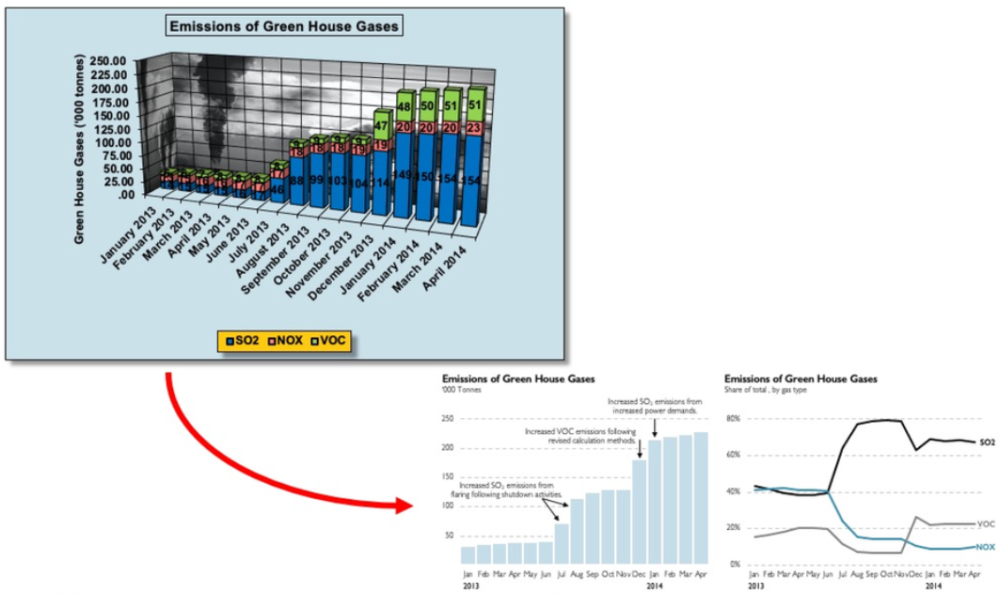
Méně je více

Někdy se trochu inkoustu navíc vyplatí…

Nepoužívejte 3D grafy
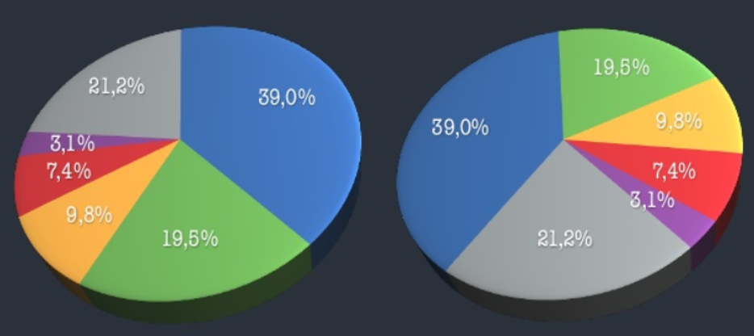
Nejde jen o zbytečný efekt, ale aktivně škodí

Nespoléhejte se na default
Excel koláčový graf

Excel koláčový graf - důraz
Excel sloupcový graf
PŘED

PO
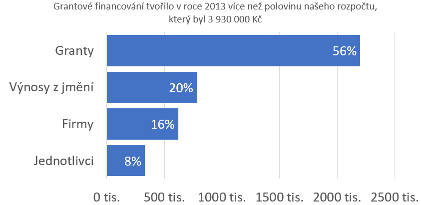
Excel sloupcový graf časová řada
PŘED
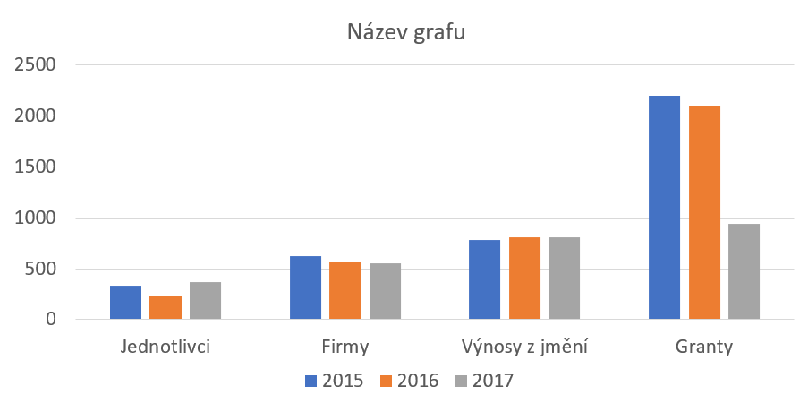
PO

Excel spojnicový graf
PŘED

PO
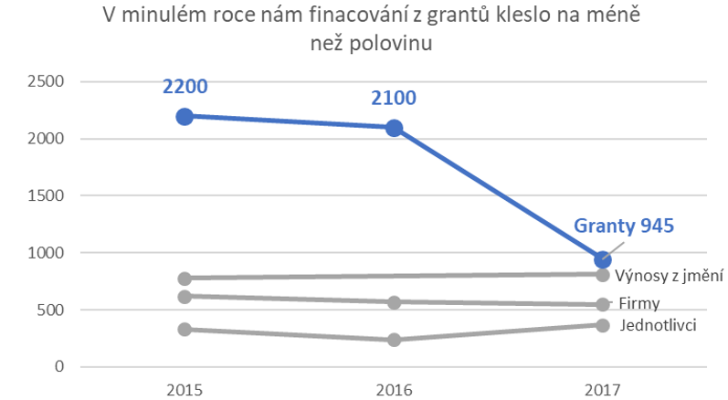
Excel likertovská škála (diverging chart)
PŘED

PO

Excel likertovská škála - varianta (diverging chart)
PŘED
PO

PRINCIP 2: Čitelnost
PRINCIP 2: Čitelnost
Respekt k tomu, jak funguje lidská kognice.

Koláčové grafy se nehodí na provonávání
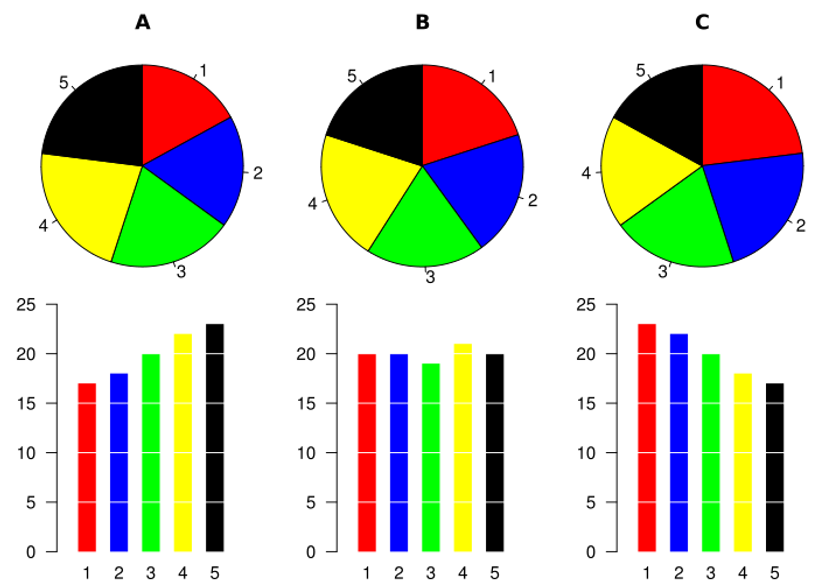
{kind=link}
% university-educated in new EU members

Příklad zlepšení čitelnosti i důrazu
SKUTEČNÁ PUBLIKACE

NÁVRH NA ZLEPŠENÍ

Schwabish, J. A. (2014) An Economist’s Guide to Visualizing Data
“Small multiples” zlepšují čitelnost časových řad
SKUTEČNÁ PUBLIKACE
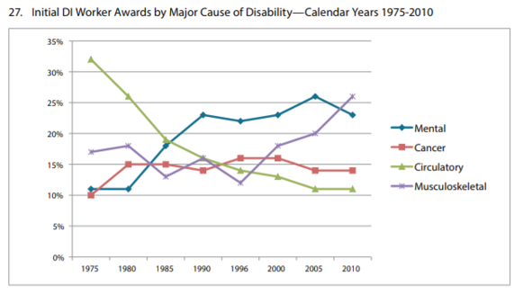
NÁVRH NA ZLEPŠENÍ

Schwabish, J. A. (2014) An Economist’s Guide to Visualizing Data
Pokud máte flexibilní nástroj, můžete být kreativní…

Schwabish, J. A. (2014) An Economist’s Guide to Visualizing Data
S tímhle opatrně…

Může být užitečné pro dvě kategorie.
Dobře zvládnutá datová hustota

Zdroj Financial Times
PRINCIP 3: Integrita
PRINCIP 3: Integrita
Vy rozhodujete o tom, jaké sdělení vizualizace vynese do popředí. Tím ale také nesete odpovědnost za možná zkreslení či přímo manipulace.
Jak moc že to rostou ceny bytů?

Problém osy y
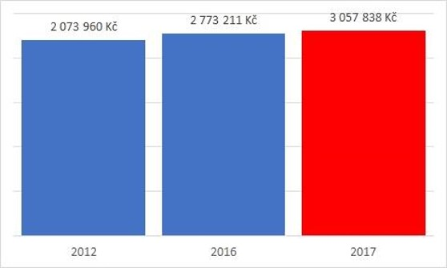

Někdy je osa y arbitrární

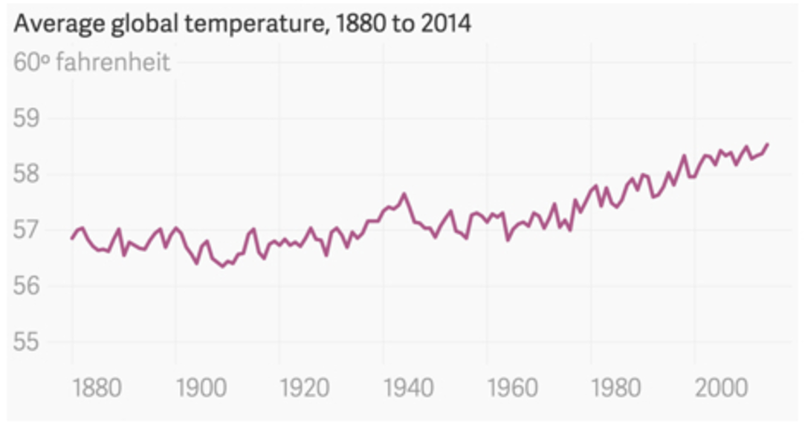
Někdy je potřeba “zazoomovat”

Pokud osa y nezačíná na 0 …
- … použijte “line chart”, raději než “bar chart”
- … upozorněte na to

Trápí nás chudoba nejméně ze všech evropských zemí?

Vizualizace míry nejistoty
Zde data z července 2021.
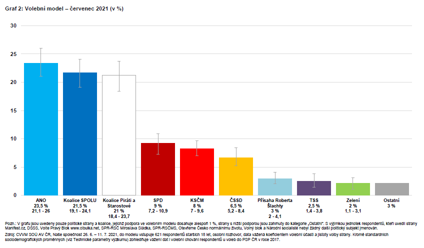
Nejistotu lze vizualizovat i u odhadů modelu

Pravdivá vizualizace, ale…

Obecné principy vizualizace - shrnutí
Důraz na data
- Defaultní nastavení je často potřeba změnit
- Ponechte jen ty prvky grafu, které mají informační hodnotu
- Nepoužívejte 3D grafy
- Přemýšlejte o tom, co chcete grafem říct
Čitelnost
- Respektujte lidskou kognici
- Vodorovné popisky grafu jsou lepší než svislé
- Přemýšlejte o tom, v jakém kontextu se s grafem čtenář setká
- Inspirujte se kreativními přístupy
Integrita
- Opatrně s osou y
- Komunikujte význam toho, co vizualizujete
- Zohledněte míru nejistoty
Důraz na data Data nemluví za sebe, vy rozhodujete o tom, na co chcete vizualizací upozornit (ale nesmíte manipulovat); barvy používejte jako nositele informace, ne jako ozdobu; Čitelnost Pokud to jde, data popisujte přímo v grafu; použití koláčových grafů minimalizujte, určitě nepoužívejte pro srovnání složení více skupin rozdíly v délce vs. rozdíly v úhlu); Přizpůsobte svoji vizualizaci účelu (jednodušší do prezentace, složitější do článku); Titulek v prezentaci nemusí jen pojmenovávat, může vyprávět příběh. V článku větčinou příběh vyprávíme spíše v textu.
Architektura vizualizace (grammar of graphics)
Leland Wilkinson an ‘The Grammar of Graphics’ (book)
Co dělá dobrou vizualizaci? Jednotlivé komponenty…
- Data
- Proměnné
- Algebra
- Měřítko
- Geometrie (line chart, bar chart, …)
- “Estetika” (barvy, tvary, sytost, …)
- …
Hadley Wickham a překlopení Wilkinsonových myšlenek do softwaru
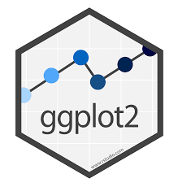
ggplot2
Sedm vrstev grafu. Tři povinné:
-
Data
-
Estetika - mapování informací na barvu, tvar, sytost, …
-
Geometrie - grafické elementy, které reprezentují data
Čtyři “navíc”:
-
Facety (small multiples)
-
Agregované statistiky (např. regresní křivka)
-
Úprava souřadnic (např. logaritmické měřítko)
-
Téma (theme) - design grafu
Data
# A tibble: 6 × 8
species island bill_length_mm bill_depth_mm flipper_l…¹ body_…² sex year
<fct> <fct> <dbl> <dbl> <int> <int> <fct> <int>
1 Adelie Torgersen 39.1 18.7 181 3750 male 2007
2 Adelie Torgersen 39.5 17.4 186 3800 fema… 2007
3 Adelie Torgersen 40.3 18 195 3250 fema… 2007
4 Adelie Torgersen NA NA NA NA <NA> 2007
5 Adelie Torgersen 36.7 19.3 193 3450 fema… 2007
6 Adelie Torgersen 39.3 20.6 190 3650 male 2007
# … with abbreviated variable names ¹flipper_length_mm, ²body_mass_gggplot(data = penguins)Estetika (Aesthetics)
- osy
- obrys
- výplň
- velikost
- průhlednost
- tvar
- …
ggplot(data = penguins,
aes(x = sex))Geometrie
- křivky
- body
- sloupce
- histogram
- boxplot
- …
ggplot(data = penguins,
aes(x = sex)) +
geom_bar()
Geometrie 2
- křivky
- body
- sloupce
- histogram
- boxplot
- …
ggplot(data = penguins %>%
filter(!is.na(sex)),
aes(x = sex,
y = bill_length_mm)) +
geom_boxplot() +
theme_classic()
Galerie 1
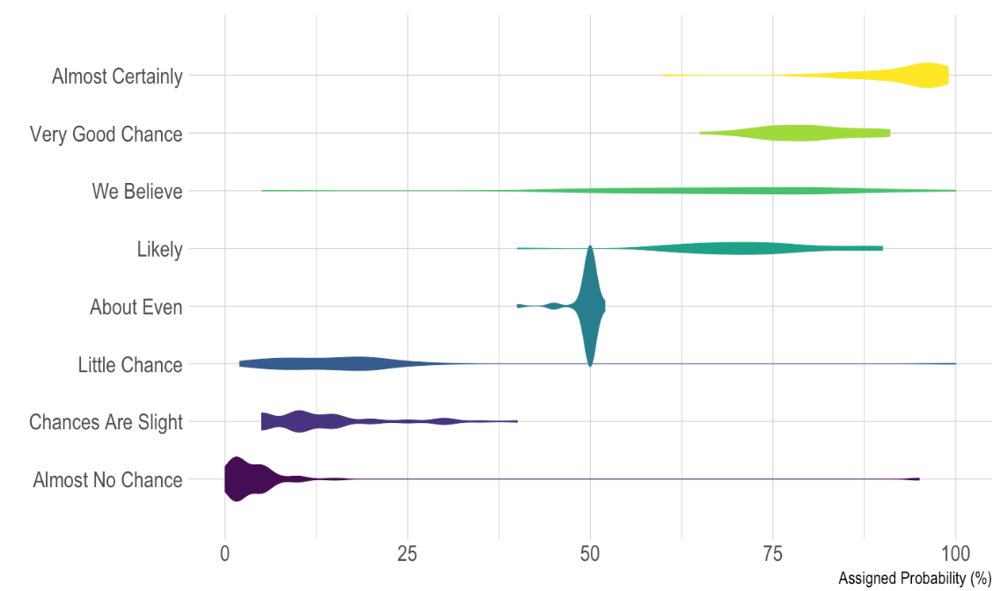
Galerie 2
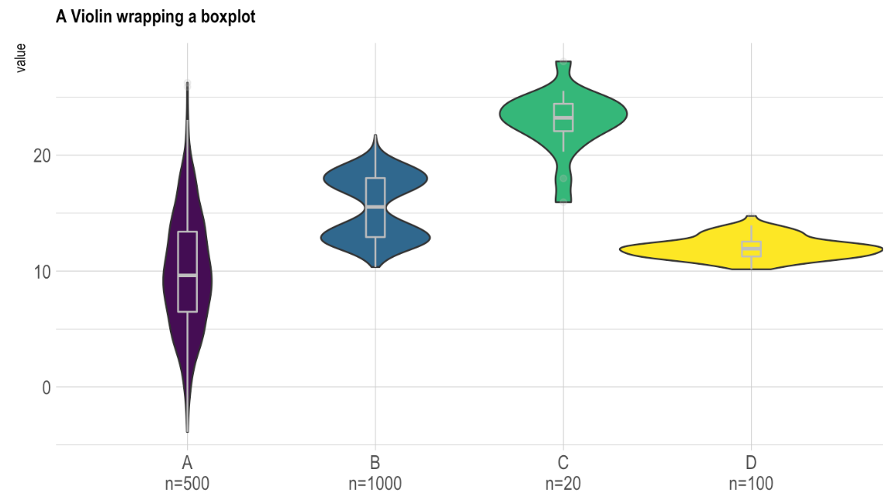
Galerie 3

Galerie 4
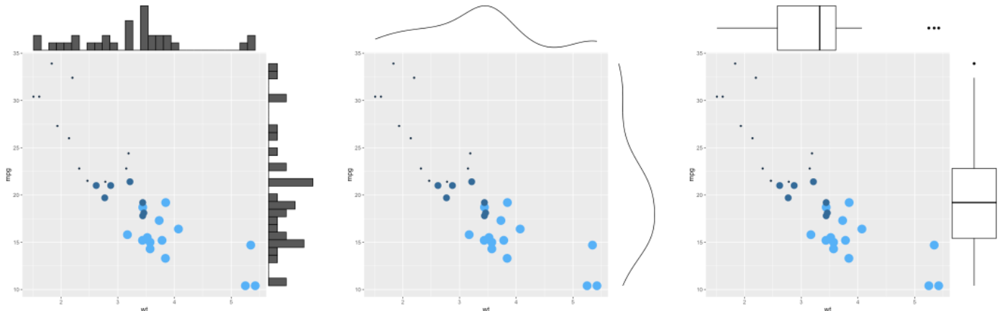
Galerie 5
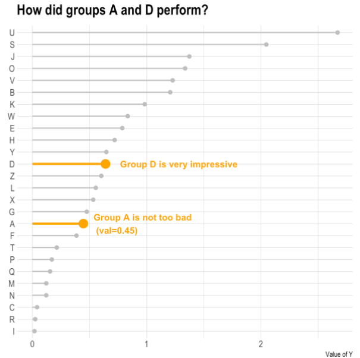
Poděkování
Tato prezentace přirozeně čerpá z těžko představitelného objemu práce těžko představitelného množství lidí.
Přesto bych speciálně rád poděkoval Petrovi Bouchalovi. S ním jsme v roce 2016 připravovali kurz o metodologii vědy na letní akademii pro středoškoláky Discover, kde jsme se vizualizaci hodně věnovali. Petr také hostoval v mých kurzech na FF UK a teprve při jeho předndáškách jsem plně docenil hodnotu toho, když vizualizaci začneme vnímat jako plnohodnotnou pomocnou vědeckou disciplínu. S řadou příkladů v této prezentaci jsem se seznámil díky Petrovi.
Zdroje - principy a aplikace
- Jonathan Schwabish - blog
- The Economist a jeho daily charts
- Hans Rosling’s Gapminder
- Office for National Statistics - Presenting data
- Šestero dobré vizualizace podle v Průvodce evaluátora - Sbírka evaluačních tipů a doporučení
- The Data Visualization Checklist
- Vybrané principy diskutované na blogu datové novinářky The Economist
- Makeover Monday
- Excel charts
- Vizualizační fakapy - pro zasmání
Zdroje - ggplot2
- Některé přednášky kurzu Úvod do analýzy dat v R
- Kapitola Graphics for Communication knihy R for Data Science
- Kniha ggplot2 od jejího autora Hadleyho Wickhama
- Veká galerie grafů v ggplot2
- Součástí této galerie je i přehled principů vizualizace
Odkazovaná literatura a další zdroje
Pokud zdroje odkazované v prezentaci nejsou interaktivní (neobahují rozklik přímo na své umístění), najdete je v seznamu zde: